Computer Science Support Site
How to Download WinSCP
1. Go to "winscp.net" on your browser.

2. scrolldown to the "Download WinSCP" section and click "Installation package".

3. your download should begin, save the .exe file.

How to access your bluenose webspace
1. Open WinSCP or FileZilla

2. Type "Bluenose.cs.dal.ca" for hostname textbox.
3. Type your CS username for the "User name" textbox as well as your cs password in the "Password". Click the "Login" button.

4. Once you log in, you should see the directories in your personal webspace.

How to download an ssh Terminal
1. Go to "winscp.net" on your browser.
2. scrolldown to the "Download PuTTY" section and click "PuTTY Portable executable".
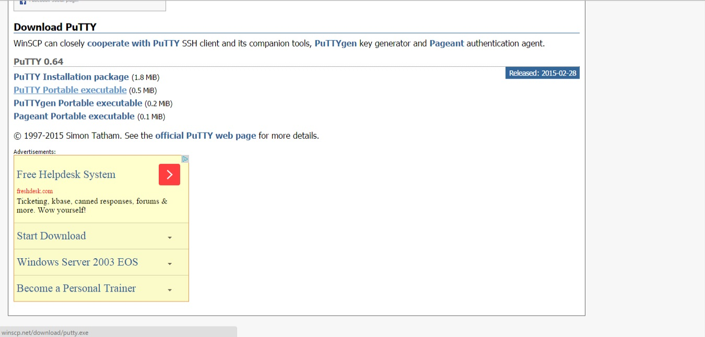3. your download should begin, save the .exe file.
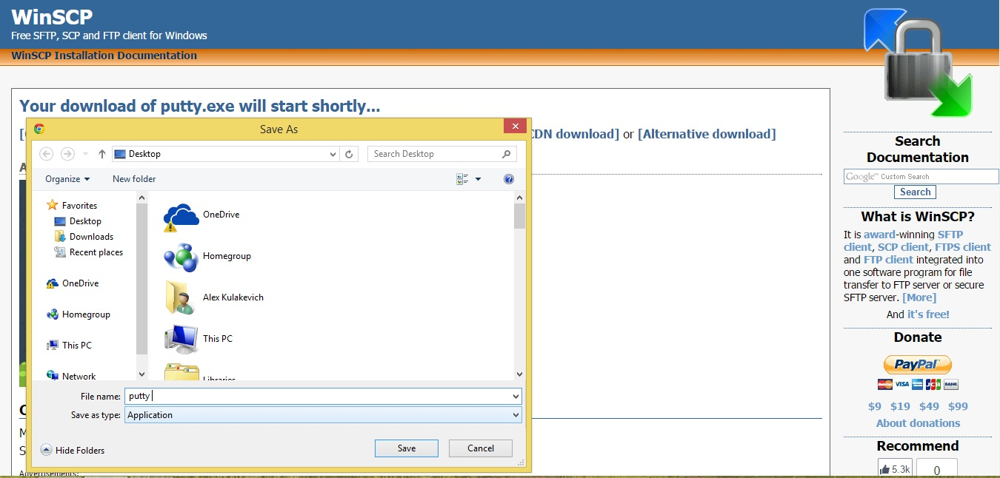How to use an ssh Terminal
1. Open "PuTTY" .

2. Type in "Blunose.cs.dal.ca" for hostname textbox and click "Open".

3. Enter your cs username to login. Note that no password bullets will show while typing. Simply type your password and hit the Enter/Return key.

4. You should now be in your personal bluenose directory.

Using Terminal
Mac's Terminal provides a text-based console application to the Mac's operating system. This console provides you with a set of tools that can be used to access and manipulate files, folders, and applications on your system.
To access Terminal, first go into the 'Applications' folder.
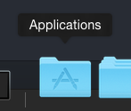Then go into the 'Utilities' folder.
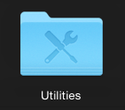Then open the Terminal app.
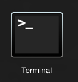After opening the app a console window, similar to the one below, will appear on your screen. This is the Terminal however not all windows may look alike as you can customize various settings to change the font, text, and colors of the console.
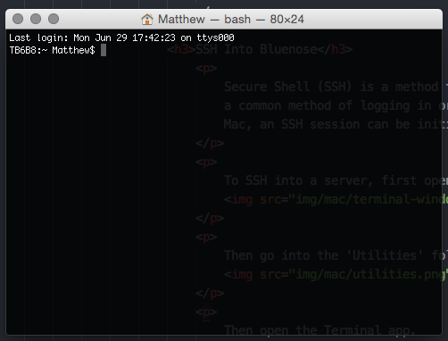SSH Into Bluenose
Secure Shell (SSH) is a method for getting access (shell access) into remote systems. This is a common method of logging in or remoting in to servers or shared resources like Bluenose. On a Mac, an SSH session can be initiated through Terminal.
To SSH into a server, first open up Terminal.
Then type in 'ssh csid@bluenose.cs.dal.ca' while replace 'csid' with your own csid and press enter. To break this down, 'ssh' is the command you are executing, 'csid' is your Computer Science username, and 'bluenose.cs.dal.ca' is the host.
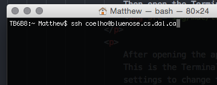After entering the command you may get a warning regarding the authenticity of the host; just enter yes.
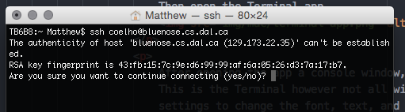Next, the console will prompt you to enter your password. Type in your password and press enter. You will notice that if you type something in, your text will not appear on the screen. This is supposed to happen and any key that you press is being entered into the console window.
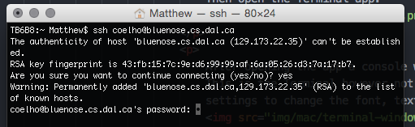If you have successfully logged in, you will see a welcome message similar to the one below and you will notice that your command line user prompt will change. You are now logged into Bluenose.
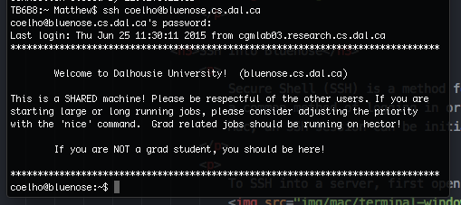When you are finished with your SSH session and want to go back to your computer, all you need to do is type 'exit'.
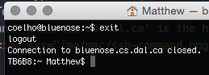FTP/SFTP Files to Bluenose
File Transfer Protocol (FTP) or SSH File Transfer Protocol (SFTP), is an easy method of transferring files between two systems. To transfer files between your computer and the bluenose server, SFTP is the preferred protocol. To transfer files using this protocol you will need an FTP/SFTP client. One commonly used, and free FTP client is Filezilla.
Before you can transfer your files, you will first need to download Filezilla. You can find the download link on Filezilla's website (www.filezilla-project.org) or go the download page here. There you will see a site that looks similar to the one below. Find the software that is compatible for your Mac OS and download it. Note: You only need to download the client and NOT the server. 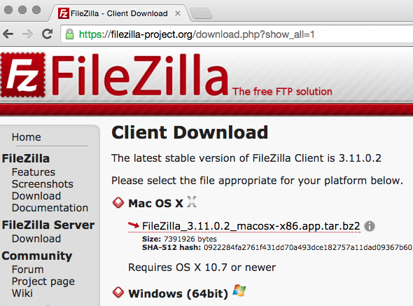
After downloading the file, go to your download location and extract the file by double clicking it. 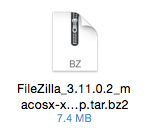
After extraction you should see an application icon looking like the below icon. Move this into your applications folder and double click it to open.
If you are opening this app for the first time you may see a warning message like the picture below. This is saying that Apple cannot verify the application's owner. Close this message. 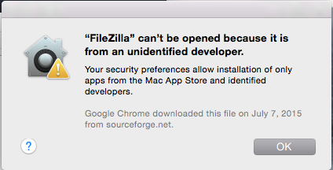
To get around this message, go back into the applications folder and force it to open by right clicking (or control clicking) the icon and selecting open. 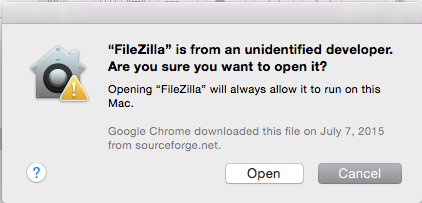
When you open the app you should see the following user interface. 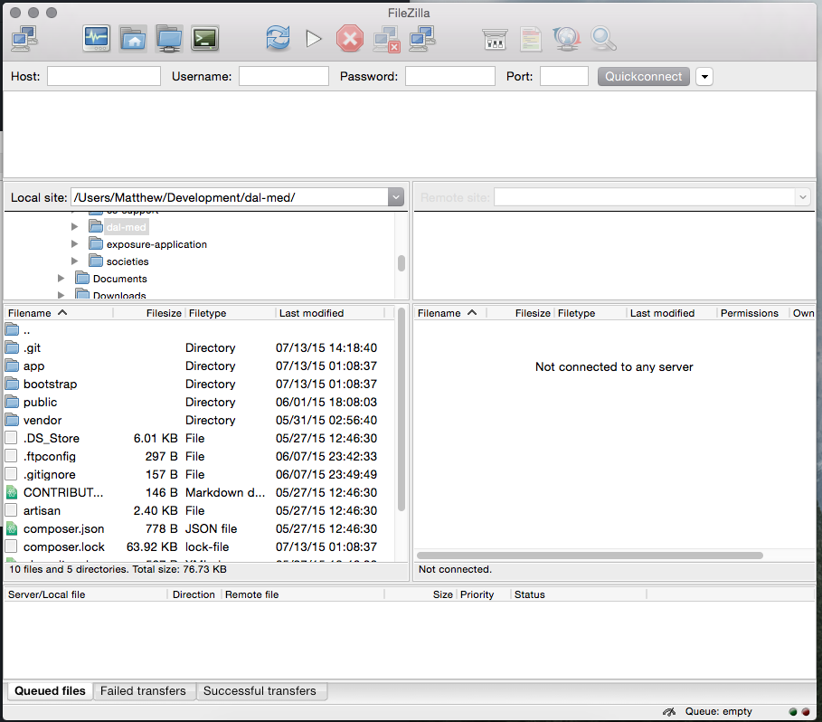
This interface has a split screen view. The first screen area is the local files view. This shows you which directory you are currently in on your local file system. This is shown below. 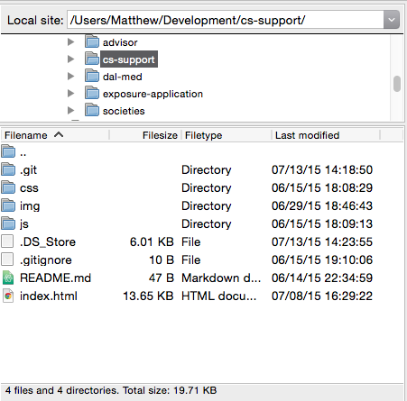
The second screen area is the remote files view. This shows you which directory you are currently in on the remote (or the server's) file system. However, when you first load up Filezilla you will see an empty screen like the one below. This is because you are not connected to a server. 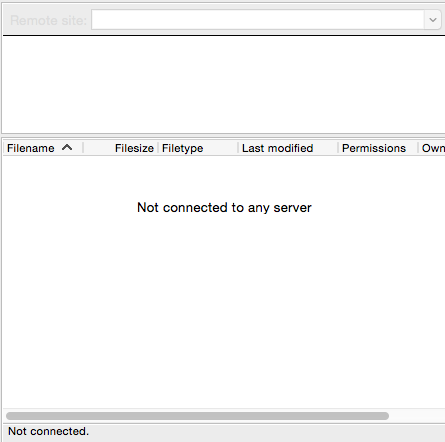
To connect to a server you need to set up a connection to it. To do this go to Filezilla's Sites Manager. This is the icon in the top left corner of the screen. This icon may look different than the one below. 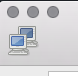
After clicking on the icon, you will see the sites manager screen. 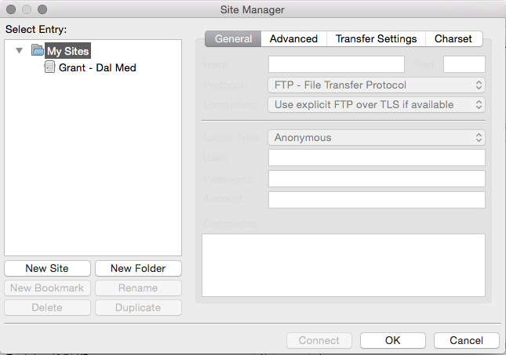
To connect to Bluenose you need to set up a new connection. To do this click on the new site button. 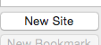
After clicking on the new site button you should see a new item be added to the list. Rename this to something recognizable. 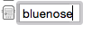
On the right hand side of the screen you will see a set of options that allow you to configure the connection settings for your website, in this case bluenose. To get connected to bluenose set the host to bluenose.cs.dal.ca, the protocol to SFTP - SSH File Transfer Protocol, the logon type to Normal. Then enter your CSID as the user and your CSID password as the password. 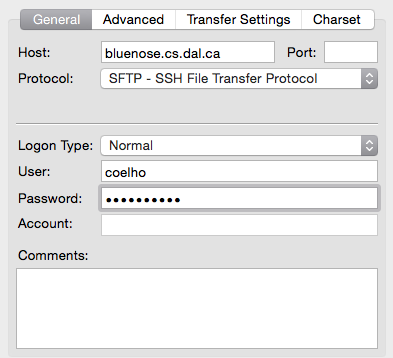
After configuring your site's settings you can either click connect, to save your settings and connect to the server, or hit ok to just save your settings and return to the main UI. 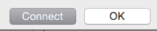
When connecting for the first time you may see a warning like the one below. This is similar to the SSH warning that was mentioned above. Check the always trust this host option and press ok. 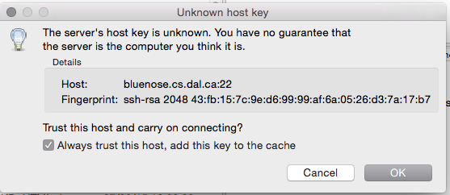
You should then see the remote view change and be populated with a set of folders and files. This means you were successfully connected to bluenose. 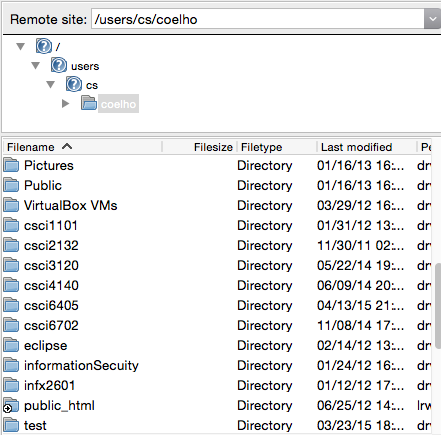
Depending on what files and folders you created on bluenose you may see a different set of folders. However everyone should have the public_html folder. This is your webroot and you should only store files that you want to be accessed via your CS webpage. Your webpage can be accessed at cs.dal.ca/~yourCSID. 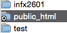